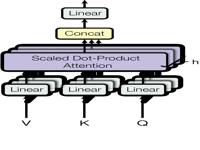
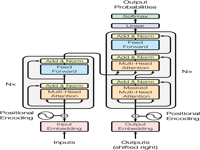
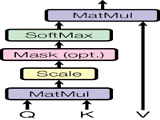

# usearch SQLite extensions are configured automatically on first import
# (macOS needs one extra step — see litesearch.postfix)
!uv add litesearchlitesearch
Fast hybrid search — SQLite FTS5 + SIMD vector search, auto-reranked.
NB Reading this on GitHub? The formatted documentation is nicer.
litesearch stores and searches documents in a single SQLite database. It combines FTS5 keyword search with SIMD vector similarity (via usearch), then merges the ranked lists using Reciprocal Rank Fusion. No server, no new infrastructure.
| Module | What you get |
|---|---|
litesearch (core) |
database(), get_store(), db.search(), rrf_merge(), vec_search() |
litesearch.data |
PDF extraction, file parsing (file_parse), code indexing (pkg2chunks, dir2chunks), FTS query preprocessing |
litesearch.utils |
ONNX text, image, and multimodal encoders (FastEncode, FastEncodeImage, FastEncodeMultimodal) |
Install
Quick Start
Search your documents in eight lines of code:
enc = StaticModel.from_pretrained("minishlab/potion-retrieval-32M") # fast static embeddings
db = database() # SQLite + usearch SIMD extensions loaded
store = db.get_store() # table with FTS5 index + embedding column
texts = ["attention is all you need",
"transformers replaced recurrent networks",
"gradient descent minimises the loss"]
embs = enc.encode(texts) # float32, shape (3, 512)
store.insert_all([dict(content=t, embedding=e.ravel().tobytes()) for t, e in zip(texts, embs)])
q = "self-attention mechanism"
db.search(q, enc.encode([q]).ravel().tobytes(), columns=['id','content'], dtype=np.float32, quote=True)/Users/71293/code/litesearch/.venv/lib/python3.13/site-packages/tqdm/auto.py:21: TqdmWarning: IProgress not found. Please update jupyter and ipywidgets. See https://ipywidgets.readthedocs.io/en/stable/user_install.html
from .autonotebook import tqdm as notebook_tqdm[{'rowid': 1,
'id': 1,
'content': 'attention is all you need',
'_dist': 0.7910182476043701,
'_rrf_score': 0.016666666666666666},
{'rowid': 3,
'id': 3,
'content': 'gradient descent minimises the loss',
'_dist': 0.9670860767364502,
'_rrf_score': 0.01639344262295082},
{'rowid': 2,
'id': 2,
'content': 'transformers replaced recurrent networks',
'_dist': 1.0227680206298828,
'_rrf_score': 0.016129032258064516}]Core API
database() — SQLite + SIMD
database() returns a fastlite Database patched with usearch’s SIMD distance functions. Pass a file path for persistence; omit it for an in-memory store.
db = database() # ':memory:' by default; use database('my.db') for persistence
db.q('select sqlite_version() as sqlite_version')[{'sqlite_version': '3.52.0'}]The usearch extension adds SIMD-accelerated distance functions directly into SQL. Four metrics are available: cosine, sqeuclidean, inner, and divergence. All variants support f32, f16, f64, and i8 suffixes.
vecs = dict(
v1=np.ones((100,), dtype=np.float32).tobytes(), # ones
v2=np.zeros((100,), dtype=np.float32).tobytes(), # zeros
v3=np.full((100,), 0.25, dtype=np.float32).tobytes() # 0.25s (same direction as v1)
)
def dist_q(metric):
return db.q(f'''
select
distance_{metric}_f32(:v1,:v2) as {metric}_v1_v2,
distance_{metric}_f32(:v1,:v3) as {metric}_v1_v3,
distance_{metric}_f32(:v2,:v3) as {metric}_v2_v3
''', vecs)
for fn in ['sqeuclidean', 'divergence', 'inner', 'cosine']: print(dist_q(fn))[{'sqeuclidean_v1_v2': 100.0, 'sqeuclidean_v1_v3': 56.25, 'sqeuclidean_v2_v3': 6.25}]
[{'divergence_v1_v2': 34.657352447509766, 'divergence_v1_v3': 12.046551704406738, 'divergence_v2_v3': 8.66433334350586}]
[{'inner_v1_v2': 1.0, 'inner_v1_v3': -24.0, 'inner_v2_v3': 1.0}]
[{'cosine_v1_v2': 1.0, 'cosine_v1_v3': 0.0, 'cosine_v2_v3': 1.0}]Cosine distance between v1 (ones) and v3 (0.25s) is 0.0 — they point in the same direction. Both
inneranddivergenceare also available for different retrieval trade-offs.
get_store() — FTS5 + Embedding Table
db.get_store() creates (or opens) a table with a content TEXT column, an embedding BLOB column, a JSON metadata column, and an FTS5 full-text index that stays in sync automatically via triggers.
store = db.get_store() # idempotent — safe to call multiple times
store.schema'CREATE TABLE [store] (\n [content] TEXT NOT NULL,\n [embedding] BLOB,\n [metadata] TEXT,\n [uploaded_at] FLOAT DEFAULT CURRENT_TIMESTAMP,\n [id] INTEGER PRIMARY KEY\n)'Pass hash=True to use a content-addressed id (SHA-1 of the content). Useful for code search and deduplication — re-inserting the same content is a no-op:
code_store = db.get_store(name='code', hash=True)
code_store.insert_all([
dict(content='hello world', embedding=np.ones( (100,), dtype=np.float16).tobytes()),
dict(content='hi there', embedding=np.full( (100,), 0.5, dtype=np.float16).tobytes()),
dict(content='goodbye now', embedding=np.zeros((100,), dtype=np.float16).tobytes()),
], upsert=True, hash_id='id')
code_store(select='id,content')[{'id': '250ce2bffa97ab21fa9ab2922d19993454a0cf28', 'content': 'hello world'},
{'id': 'c89f43361891bfab9290bcebf182fa5978f89700', 'content': 'hi there'},
{'id': '882293d5e5c3d3e04e8e0c4f7c01efba904d0932', 'content': 'goodbye now'}]db.search() — Hybrid FTS + Vector with RRF
db.search() runs both an FTS5 keyword query and a vector similarity search, then merges the ranked lists with Reciprocal Rank Fusion. Documents that appear in both lists get a score boost — the best of both worlds.
# Re-create a clean store for the search demo
db2 = database()
st2 = db2.get_store()
phrases = [
"attention mechanisms in neural networks",
"transformer architecture for sequence modelling",
"stochastic gradient descent and learning rate schedules",
"positional encoding and token embeddings",
"dropout regularisation reduces overfitting",
]
# use float32 vectors (matching dtype= below)
vecs2 = [np.random.default_rng(i).random(64, dtype=np.float32) for i in range(len(phrases))]
st2.insert_all([dict(content=p, embedding=v.tobytes()) for p, v in zip(phrases, vecs2)])<Table store (content, embedding, metadata, uploaded_at, id)>q2 = "attention"
q_vec = np.random.default_rng(42).random(64, dtype=np.float32).tobytes()
db2.search(q2, q_vec, columns=['id','content'], dtype=np.float32)[{'rowid': 1,
'id': 1,
'content': 'attention mechanisms in neural networks',
'rank': -1.116174474454989,
'_rrf_score': 0.032539682539682535},
{'rowid': 3,
'id': 3,
'content': 'stochastic gradient descent and learning rate schedules',
'_dist': 0.20330411195755005,
'_rrf_score': 0.016666666666666666},
{'rowid': 2,
'id': 2,
'content': 'transformer architecture for sequence modelling',
'_dist': 0.23124444484710693,
'_rrf_score': 0.01639344262295082},
{'rowid': 5,
'id': 5,
'content': 'dropout regularisation reduces overfitting',
'_dist': 0.23238885402679443,
'_rrf_score': 0.016129032258064516},
{'rowid': 4,
'id': 4,
'content': 'positional encoding and token embeddings',
'_dist': 0.32342469692230225,
'_rrf_score': 0.015625}]Pass rrf=False to see the raw FTS and vector legs separately — handy for debugging relevance:
db2.search(q2, q_vec, columns=['id','content'], dtype=np.float32, rrf=False){'fts': [{'id': 1,
'content': 'attention mechanisms in neural networks',
'rank': -1.116174474454989}],
'vec': [{'id': 3,
'content': 'stochastic gradient descent and learning rate schedules',
'_dist': 0.20330411195755005},
{'id': 2,
'content': 'transformer architecture for sequence modelling',
'_dist': 0.23124444484710693},
{'id': 5,
'content': 'dropout regularisation reduces overfitting',
'_dist': 0.23238885402679443},
{'id': 1,
'content': 'attention mechanisms in neural networks',
'_dist': 0.24136507511138916},
{'id': 4,
'content': 'positional encoding and token embeddings',
'_dist': 0.32342469692230225}]}Tip — dtype matters. Always pass the same
dtypeused when encoding.model2vecand most ONNX models returnfloat32; passdtype=np.float32. The default isfloat16(matchesFastEncode).
Tip — custom schemas.
get_store()is a convenience. For custom schemas, calldb.t['my_table'].vec_search(emb, ...)andrrf_merge(fts_results, vec_results)directly.
litesearch.data
Query Preprocessing
FTS5 is powerful, but raw natural-language queries often miss results. litesearch.data ships helpers to transform queries before sending them to FTS:
q = 'This is a sample query'
print('preprocessed q with defaults: `%s`' % pre(q))
print('keywords extracted: `%s`' % pre(q, wc=False, wide=False))
print('q with wild card: `%s`' % pre(q, extract_kw=False, wide=False, wc=True))preprocessed q with defaults: `sample* OR query*`
keywords extracted: `sample query`
q with wild card: `This* is* a* sample* query*`| Function | What it does |
|---|---|
clean(q) |
strips * and returns None for empty queries |
add_wc(q) |
appends * to each word for prefix matching |
mk_wider(q) |
joins words with OR for broader matching |
kw(q) |
extracts keywords via YAKE (removes stop-words) |
pre(q) |
applies all of the above in one call |
PDF Extraction
litesearch.data patches pdf_oxide.PdfDocument with bulk page-extraction methods. All methods take optional st / end page indices and return a fastcore L list:
| Method | Returns |
|---|---|
doc.pdf_texts(st, end) |
plain text per page |
doc.pdf_markdown(st, end) |
markdown with headings + tables detected |
doc.pdf_links(st, end) |
URI strings extracted from annotations |
doc.pdf_tables(st, end) |
structured rows / cells / bbox dicts |
doc.pdf_spans(st, end) |
text spans with font size, weight, bbox |
doc.pdf_images(st, end, output_dir) |
image metadata, or save to disk |
doc.pdf_chunks(st, end) |
(page, chunk_idx, text) triples, markdown-chunked via chonkie |
images_to_pdf(imgs, output) goes the other direction — wraps a list of images (PIL Images, bytes, or paths) into a conformant multi-page image-only PDF with no external dependencies.
doc = PdfDocument('pdfs/attention_is_all_you_need.pdf')
print(f'{doc.page_count()} pages, {len(doc.pdf_links())} links')
# plain text of page 1
doc.pdf_texts(0, 1)[0][:300]15 pages, 18 links'Provided proper attribution is provided, Google hereby grants permission to\nreproduce the tables and figures in this paper solely for use in journalistic or\nscholarly works.\n\n\nAttention Is All You Need\n\n\n∗\n∗\n∗\n∗\nAshish Vaswani Noam Shazeer Niki Parmar Jakob Uszkoreit\nGoogle Brain Google Brain Google'# markdown export — headings and tables are detected automatically
md = doc.pdf_markdown()
print(f'Page 1 (markdown):\n{md[0][:400]}')Page 1 (markdown):
# arXiv:1706.03762v7 [cs.CL] 2 Aug 2023
Provided proper attribution is provided, Google hereby grants permission to reproduce the tables and figures in this paper solely for use in journalistic or scholarly works.
## Attention Is
## All
## You Need
∗∗**Ashish Vaswani****Noam Shazeer****Niki Parmar** Google BrainGoogle BrainGoogle Research [avaswani@google.com](mailto:avaswani@google.com)[nodoc.pdf_chunks() wraps pdf_markdown() + chonkie’s RecursiveChunker into (page, chunk_idx, text) triples — the direct input for encode_pdf_texts:
doc = PdfDocument('pdfs/attention_is_all_you_need.pdf')
chunks = doc.pdf_chunks()
print(f'{len(chunks)} chunks from {doc.page_count()} pages')
# 31 chunks from 15 pages
# (page, chunk_idx, text) triples — direct input for encode_pdf_texts
pg, ci, text = chunks[0]
print(f'page {pg}, chunk {ci}: {text[:80]}...')Code & File Ingestion
pyparse splits a Python file or string into top-level code chunks (functions, classes, assignments) with source location metadata — ready to insert into a store:
txt = """
from fastcore.all import *
a=1
class SomeClass:
def __init__(self,x): store_attr()
def method(self): return self.x + a
"""
pyparse(code=txt)[{'content': 'a=1', 'metadata': {'path': None, 'uploaded_at': None, 'name': None, 'type': 'Assign', 'lineno': 3, 'end_lineno': 3}}, {'content': 'class SomeClass:\n def __init__(self,x): store_attr()\n def method(self): return self.x + a', 'metadata': {'path': None, 'uploaded_at': None, 'name': 'SomeClass', 'type': 'ClassDef', 'lineno': 4, 'end_lineno': 6}}]pkg2chunks indexes an entire installed package in one call — great for building a semantic code-search store over your dependencies:
chunks = pkg2chunks('fastlite')
print(f'{len(chunks)} chunks from fastlite')
chunks.filter(lambda d: d['metadata']['type'] == 'FunctionDef')[0]51 chunks from fastlite{'content': 'def t(self:Database): return _TablesGetter(self)',
'metadata': {'path': '/Users/71293/code/litesearch/.venv/lib/python3.13/site-packages/fastlite/core.py',
'uploaded_at': 1771806134.9519145,
'name': 't',
'type': 'FunctionDef',
'lineno': 44,
'end_lineno': 44,
'package': 'fastlite',
'version': '0.2.4'}}file_parse is the single entry point for any file type — Python, Jupyter notebooks, PDF, Markdown, plain text, and compiled-language source files (JS/TS, Go, Java, Rust…). All return the same {content, metadata} dicts:
# Python → AST-parsed functions and classes
file_parse(Path('litesearch/core.py'))[:2]
# Jupyter notebook → one dict per cell
file_parse(Path('nbs/01_core.ipynb'))[:2]
# PDF → markdown-chunked text (via pdf_chunks)
file_parse(Path('pdfs/attention_is_all_you_need.pdf'))[:2]dir2chunks indexes every file in a directory tree — analogous to pkg2chunks but for arbitrary directories rather than installed packages:
# Index all Python source files in a directory
chunks = dir2chunks('litesearch', types='py')
print(f'{len(chunks)} chunks from litesearch/')
# Mix formats: notebooks, markdown, PDFs
chunks = dir2chunks('nbs', types='ipynb,md,pdf')
print(f'{len(chunks)} chunks from nbs/')litesearch.utils
FastEncode — ONNX Text Encoder
FastEncode wraps any ONNX model from HuggingFace Hub. It handles tokenisation, batching, optional parallel thread-pool execution, and runtime int8 quantization — all without PyTorch or Transformers.
| Config | Model | Dim | Notes |
|---|---|---|---|
embedding_gemma (default) |
onnx-community/embeddinggemma-300m-ONNX |
768 | Strong retrieval, ~300M params |
modernbert |
nomic-ai/modernbert-embed-base |
768 | BERT-style, fast |
nomic_text_v15 |
nomic-ai/nomic-embed-text-v1.5 |
768 | Shares embedding space with nomic_vision_v15 |
encode_document and encode_query apply the model’s prompt templates automatically.
texts = [
'Attention is all you need',
'The transformer architecture uses self-attention',
'BERT pretrains on masked language modeling',
'GPT uses autoregressive generation',
]
# Default model — downloads once, cached
enc = FastEncode()
doc_embs = enc.encode_document(texts)
q_emb = enc.encode_query(['what paper introduced transformers?'])
print('doc shape:', doc_embs.shape, 'dtype:', doc_embs.dtype) # (4, 768) float16
# Batching + parallel thread-pool
enc_fast = FastEncode(batch_size=2, parallel=2)
embs = enc_fast.encode_document(texts)
# Runtime int8 quantization — creates model_int8.onnx on first run, reused after
enc_q = FastEncode(quantize='int8')
embs = enc_q.encode_document(texts)doc shape: (4, 768) dtype: float16
Encoding setup errored out with exception: No module named 'onnx'
ONNX session not initialized. Fix error during initialisationFastEncodeImage — ONNX Image Encoder
FastEncodeImage encodes images with CLIP-style ONNX vision models. No Transformers dependency — preprocessing (resize → normalise → CHW) is done with PIL + NumPy using config stored in the model dict.
| Config | Model | Dim | Notes |
|---|---|---|---|
nomic_vision_v15 (default) |
nomic-ai/nomic-embed-vision-v1.5 |
768 | Same space as nomic_text_v15 |
clip_vit_b32 |
Qdrant/clip-ViT-B-32-vision |
512 | Classic CLIP |
Accepts PIL Images, file paths, or raw bytes — any mix.
FastEncodeMultimodal — Cross-Modal Image + Text Search
FastEncodeMultimodal wraps a model repo that ships both text and vision ONNX encoders in a single shared embedding space — a text query can retrieve images directly. Below: index Attention Is All You Need (text chunks + figures) then search for 'attention mechanism diagram'.
Unified model — siglip2_so400m (~800 MB, one download):
import json, base64, io
from PIL import Image
from IPython.display import displayenc = FastEncodeMultimodal(siglip2_so400m) # single unified model, ~800 MB, cached on first run
doc = PdfDocument('pdfs/attention_is_all_you_need.pdf')
db = database()
ts, ims = db.get_store('texts'), db.get_store('images')
for pg, ci, chunk, emb in encode_pdf_texts(doc, enc.text):
ts.insert(dict(content=chunk, embedding=emb.tobytes(), metadata=json.dumps({'page': pg})))
for pg, img_bytes, emb in encode_pdf_images(doc, enc.vision):
ims.insert(dict(content=f'page_{pg}', embedding=emb.tobytes(),
metadata=json.dumps({'page': pg, 'data': base64.b64encode(img_bytes).decode()})))
q = 'attention mechanism diagram'
q_emb = enc.text.encode([q])[0].tobytes()
txt_r = ts.db.search(pre(q), q_emb, table_name='texts', columns=['content']) or []
img_r = ims.vec_search(q_emb)
for r in rrf_merge(txt_r, img_r)[:6]:
print(f"rrf={r['_rrf_score']:.4f} {r['content'][:70]}")
meta = json.loads(r.get('metadata', '{}'))
if 'data' in meta:
display(Image.open(io.BytesIO(base64.b64decode(meta['data']))).resize((200, 150)))Paired models — nomic_text_v15 + nomic_vision_v15 share the same 768-dim space; use FastEncode and FastEncodeImage separately:
enc_text = FastEncode(nomic_text_v15)
enc_img = FastEncodeImage(nomic_vision_v15)
db2 = database()
ts2, ims2 = db2.get_store('texts'), db2.get_store('images')
for pg, ci, chunk, emb in encode_pdf_texts(doc, enc_text):
ts2.insert(dict(content=chunk, embedding=emb.tobytes(), metadata=json.dumps({'page': pg})))
for pg, img_bytes, emb in encode_pdf_images(doc, enc_img):
ims2.insert(dict(content=f'page_{pg}', embedding=emb.tobytes(),
metadata=json.dumps({'page': pg, 'data': base64.b64encode(img_bytes).decode()})))
q_emb2 = enc_text.encode([q])[0].tobytes()
txt_r2 = ts2.db.search(pre(q), q_emb2, table_name='texts', columns=['content']) or []
img_r2 = ims2.vec_search(q_emb2)
for r in rrf_merge(txt_r2, img_r2)[:6]:
print(f"rrf={r['_rrf_score']:.4f} {r['content'][:70]}")
meta = json.loads(r.get('metadata', '{}'))
if 'data' in meta:
display(Image.open(io.BytesIO(base64.b64decode(meta['data']))).resize((200, 150)))rrf=0.0167 Self-attention, sometimes called intra-attention is an attention mecha
rrf=0.0167 page_3
rrf=0.0164 Attention mechanisms have become an integral part of compelling sequen
rrf=0.0164 page_2
rrf=0.0161 2,[19]. Inall but a few cases27],[ however, such attention mechanisms
rrf=0.0161 page_3
rrf=0.0167 Self-attention, sometimes called intra-attention is an attention mecha
rrf=0.0167 page_3rrf=0.0164 Attention mechanisms have become an integral part of compelling sequen
rrf=0.0164 page_2rrf=0.0161 2,[19]. Inall but a few cases27],[ however, such attention mechanisms
rrf=0.0161 page_3Next Steps
- examples/01_simple_rag.ipynb — ingest a folder of PDFs, chunk with chonkie, rerank with FlashRank
- examples/02_tool_use.ipynb — wire litesearch into an LLM tool-use loop
- core docs — full API reference for
database,get_store,search,rrf_merge,vec_search - data docs — PDF methods,
pyparse,pkg2chunks, query preprocessing - utils docs —
FastEncode,download_model, image tools
Acknowledgements
A big thank you to @yfedoseev for pdf-oxide, which powers the PDF extraction functionality in litesearch.data.